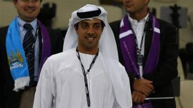
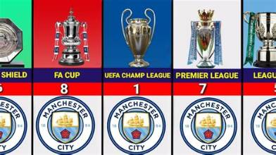

En los últimos dias ha habido un gran alboroto alrededor del mundo del fútbol y principalmente alrededor de uno de los gigantes del fútbol, tanto económicante como deportivamente
Este alboroto viene señalando directamente al Machester City. El club inglés ha sido tema de conversacion en los últimos dias debido a que ha sido declarado culpable en 114 denuncias de 115. Todo denuncias alrededor de saltarse el fair play financiero de la premier league. Pero este no ha surgido de un día a otro, llevan gastando año tras año en nuevos jugadores sin realizar una cantidad significativa de dinero mediante ventas o otras vías legales como patrocinios. En este ultimo año se han centrado más en la venta de jugadores aún así los años anteriores se han saltado todas las normas. Uno de los culpables principales es el dueño actual del club, unos de los hombres con mas dinero en el mundo. Su nombre es Mansour Bin Zayed Al Nahayan.

La familia Al Nahyan controla vastas reservas de petróleo y gas, que han generado enormes ingresos desde mediados del siglo XX. Además de los ingresos directos de recursos naturales, Mansour y su familia están involucrados en diversos negocios e inversiones globales a través de fondos soberanos, como el Abu Dhabi Investment Authority, que maneja miles de millones de dólares en activos alrededor del mundo. Lo que hace que parte de este dinero vaya directamente inyectados al Manchester city de manera descontrolada y sin límites.

Esto ya ha pasado antes con clubes como el Everton que sufrio una pérdida de 6 puntos y altas sanciones economicas. Veremos que pasa en los siguientes dias pero esto no pinta bien ni para el club ni susu directivos principales.